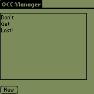
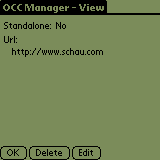
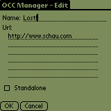

One Click Clipping (OCC) is a way of making a PQA which does not require any static data on the client PDA. The user of the client taps the OCC and the content of the OCC is fetched from the server. Much like the way a traditional web browser works.
To be able to use OCC you must have the Mobile Internet Kit installed (or use a Palm VII/i705).
The One Click Clipping suite of tools is free software.
A normal PQA requires some sort of HTML to be compiled into the PQA itself. This requires that the user have to fill out a form or click a link before the actual clipping is being served. In the case where no form data is required this is a waste of time for some people. It would be nice if you could just launch the PQA and see the clipping without any interaction.
OCC addresses this. A OCC comes in one of two forms - either as a trimmed down file or as a full blown executable. Both has their strong points and weaknesses.
The traditional OCC uses OCCMan to launch Viewer to fetch the clipping. A standalone OCC bypasses the OCCMan step and uses Viewer to fetch the clipping.
The traditional OCC is usually around 300-400 bytes in size whereas the standalone OCC normally weighs in at around 1.2-1.4Kb.
The traditional OCC can be deleted directly from the launcher whereas the standalone OCC must be removed using OCCMan.
So - what can a standalone OCC do that a traditional OCC cannot (except waste more bytes :o)? The obvious answer is "nothing". Which isn't entirely true. Consider this scenario ... A salesman is attending a tradeshow. On his Palm Device he has created a standalone OCC containing the URL to the company website of a product to be promoted on the tradeshow. A potential customer approaches the salesman and ask him for more information about the product. The salesman beams the OCC to the potential customer who taps the OCC and is brought to the company website for the product.
If the salesman had made the OCC as a traditional OCC he would have to make sure that the customer had installed OCCMan to be able to launch the OCC.
OCCMan can be used to create OCCs on your device.
Installation of One Click Clipping Manager is no more different than installation of any other Palm OS program. Windows users:
Linux users:
When the synchronization is done you will have a 'OCCMan' icon in the Unfiled category on your Palm PDA. Feel free to move Login Manager to another category.
OCCMan is the manager program for OCCs. Using OCCMan you can view details about OCCs, delete OCCs as well as create OCCs. OCCMan is also used by traditional OCCs to communicate with Viewer.
When launching OCCMan it will show a list of currently installed OCCs:

To add a new OCC press New. This will bring up the Edit form - see below.
To view the details of or delete a OCC tap the name ...

Select OK to dismiss the dialog or Delete to delete the OCC - you will be asked to confirm your action.
Press Edit to edit this OCC:

Enter a name a URL and indicate if this should be a Standalone OCC. You do not need to prefix the URL with http:// - OCCMan will take care of that.
Care should be taken when deleting OCCs. The safest way to delete a OCC is using OCCMan. A traditional OCC can be deleted using the Delete menu item in Launcher.
A standalone OCC can also be delete using the Delete menu item in Launcher but it will wipe all other OCCs and OCCMan as well. The reason for this is that a standalone OCC shares the same Creator ID as OCCMan and other OCCs. The way that the Delete menu item works is that it will delete the executable and all other files with the same Creator ID.
You have been warned! Always use OCCMan to delete OCCs!
You use occmake.exe (Windows) or occmake (Linux) to create OCCs. Both binaries support the following options:
Usage:
occmake [options] occ-name url
Options:
-e Make standalone executable.
-l bmpname BMP file to use for large icon.
-n prcname Name of OCC in database (ie. in launcher).
-s bmpname BMP file to use for small icon.
To create a minimal OCC:
occmake test www.cnn.com
... this will create a test.prc in the current directory. The name of the OCC in Launcher will be test. The clipping/url fetched is http://www.cnn.com.
A more elegant OCC:
occmake -l largeicon.bmp -s smallicon.bmp -n "Test OCC" test www.cnn.com
... this will create a test.prc in the current directory. The name of the OCC in Launcher will be Test OCC. The OCC will have its own set of icons. The clipping/url fetched is http://www.cnn.com.
To create a standalone OCC executable specify the -e switch.
Notes:
Default icons are:
To see how a OCC work download the demonstration [7] archive. Unpack it and HotSync the demo.prc and demo-e.prc to your device. The demo also requires OCCMan to be installed.
Launch either one of the demo prcs - after a while an informal greeting should be shown ...
The demo OCCs was compiled with:
occmake -e -n "Demo Exe" -l large.bmp -s small.bmp demo-e www.schau.com/palm/occ/demo.php?type=exe
(standalone executable) ... and:
occmake -n "Demo" -l large.bmp -s small.bmp demo-e www.schau.com/palm/occ/demo.php?type=norm
(normal OCC).